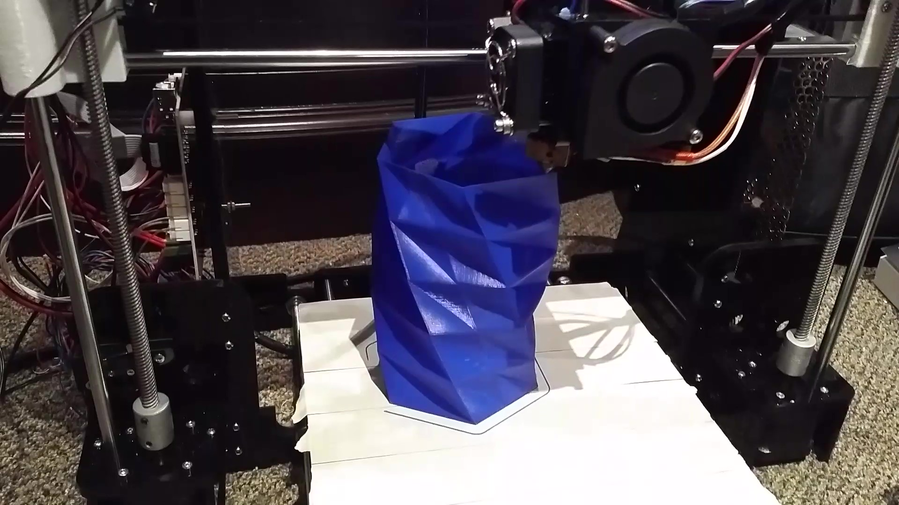

3D Printer
My Printer is based off the ANET A8, which is originally based of the design of the Prusa i3. I have made modifications on the printer, which includes the following:- The direct drive extruder was replaced with a bowden system
- The heat bed was disconnected from the main power supply, now being connected to an old 250W computer PSU.
- A MOSFET was added to the heat bed circuit so that the main board does not need to bear the high current needed for the bed.
- The belts were replaced with higher quality fiber glass reinforced belts.
- General supports to improve frame rigidity.
- TODO - add bed levelling, print front frame support, make case to cover wiring and main board.
April 2015
All parts were ordered off Aliexpress. Everything was shipped. This printer is available for purchase here.
May 2015
Printer was assembled. Full assemly took a week however in reality, assembly really never stopped.
Later in May 2015
First print!
After much trial and error, the printer was finally laying down plastic. Why not start off with something unnecesarily geometrically complex?

Ambitious first print.